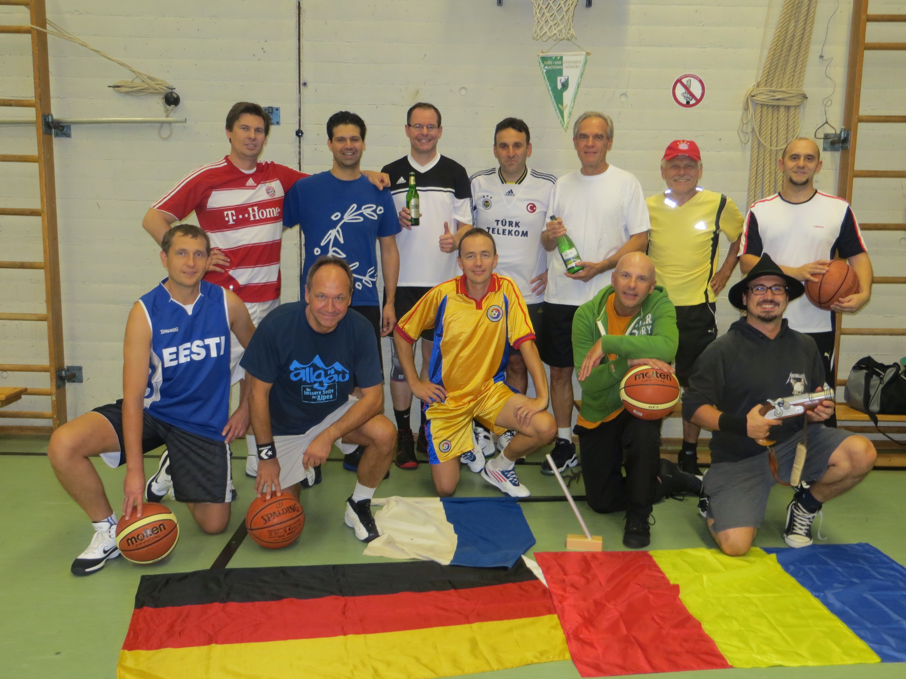

<!-- Start Outter Wrapper -->
<div class="outter-wrapper body-wrapper">


	<div class="wrapper blog-roll ad-pad clearfix">

		<!-- Start Main Column  -->
		<div class="col-3-4">

			<div class="clearfix post">


				<h1 class="title">Damen Ü 40 fordern Männer 4 beim Trainingsmatch</h1>

				<div class="mosaic-block circle">
					<a href="../assets/img/herren-3/h3_mannschaftsfoto.jpg" class="mosaic-overlay fancybox" data-fancybox-group="gallery" title="Insert Title"></a>
					<div class="mosaic-backdrop">
						
					</div>
				</div>
				


				<p>Die Saison 2015/2016 war alles in allem eine erfolgreiche Saison für die erste Herrenmannschaft vom TSV Forstenried.</p>

				<p class="lead">Nach über einem Jahr Vorbereitung - wir fanden einfach keinen früheren Termin - trafen am 21. März 2016 unsere Damen Ü 40 und die Mannschaft Männer 4 zu einem Trainingsspiel zusammen. Vorab: es hat beiden Mannschaften großen Spaß gemacht, unabhängig von den einzelnen Punktergebnissen. In den Sommerferien ist eine Neuauflage geplant.</p>

				<div class="col-2-5 right last pad-left">
					
					<span class="wp-caption-text">General Caption about this image</span>
				</div>

				<p>Die zehn Herren( rosa) und acht Damen (gelb) spielten je drei Spiele bis 30 Punkten. Im ersten Spiel kauften die Amazonen den recht lässig startenden Männern zunächst den Schneid ab, ließen sich vom Größenvorteil nicht einschüchtern und gingen flott mit 12:11in Führung.</p>
				<p>Es bestätigte sich, was man schon beim Einwerfen sehen konnte: Unsere Damen Ü40 sind ein disziplinierter, gut eingespielter Kader. Ihre Stärken liegen in der Verteidigung. Da sind sie nicht zimperlich, weder beim Austeilen noch im Einstecken.</p>

				<div class="col-2-5 left last pad-right">
					
					<span class="wp-caption-text">General Caption about this image</span>
				</div>

				<p>Die Herren, eher ein Team von brillanten Individualisten, waren von der „engen“ Verteidigung anfangs wohl etwas überrascht. Vielleicht, das sei zur Ehrenrettung der wackeren Männer 4 gesagt, mussten sie sich auch erst an den etwas kleineren Damenball (Größe 6) gewöhnen.</p>


				<p>Die Herren wechselten im Rückstand die komplette Mannschaft aus. Fünf neue, frische, smarte Jungs brachten dann die Wende auf dem Feld und konnten die Damen im ersten Match mit ordentlich Mühe besiegen.</p>

				<div class="col-2-5 right last pad-left">
					
					<span class="wp-caption-text">General Caption about this image</span>
				</div>

				<p>Erst im zweiten Spiel brachte das vermeintlich stärkere Geschlecht seine größeren Längen und auch seine guten Werfer zur Geltung, spielte recht konzentriert und gewann relativ deutlich.</p>

				<p>Ähnlich gut und dominant begannen sie die dritte Partie, bevor die Damen in einem furiosen Finale nochmals kräftig aufdrehten. Konzentrierte Pässe und ein klarer direkter Zug zum Korb brachten Ihnen sehenswerte Punkte. Aber die Herren setzten ebenfalls Treffer um Treffer und retteten den Vorsprung durchs Ziel.</p>

				<blockquote class="right">Zum Ende blieb für die Ausdauernden noch Zeit für ein Mixed. Zwei Teams mit jeweils zwei Frauen und drei Männern trugen zum Ausklang einen heißen Fight unter den Körben aus. Alle Beteiligten an diesem Abend waren sich einig: Dieses Trainingsspiel war ein Gewinn für beide Seiten und bedarf unbedingt der Wiederholung.</blockquote>

				<div class="col-2-5 left last pad-right">
					
					<span class="wp-caption-text">General Caption about this image</span>
				</div>


				<p>Viel Spaß</p>
				<p>Senta Braun und Stefan Riefler</p>

				<p>Link zu den <a href="#event-calender-man-4"> Männer 4 Trainingszeiten</a></p>
				<p>Link zu den <a href="#event-calender-woman-1"> Damen 1 Trainingszeiten</a></p>

			</div>
		</div>
	</div>
</div>
